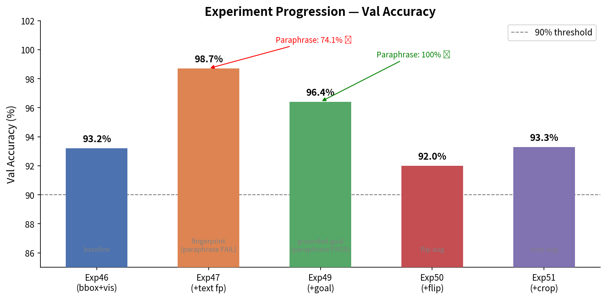
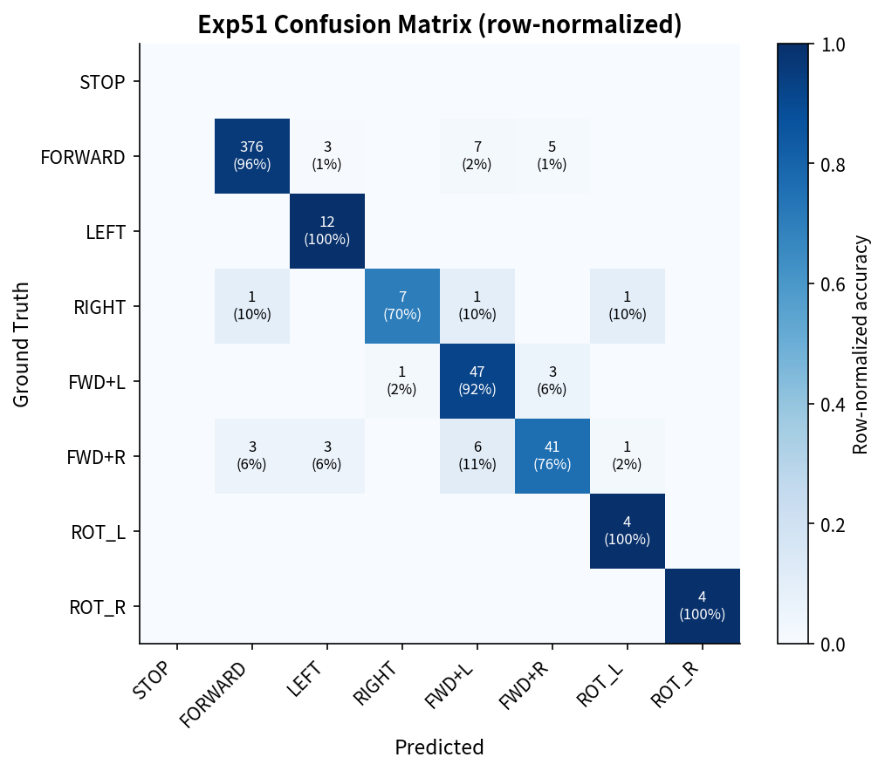
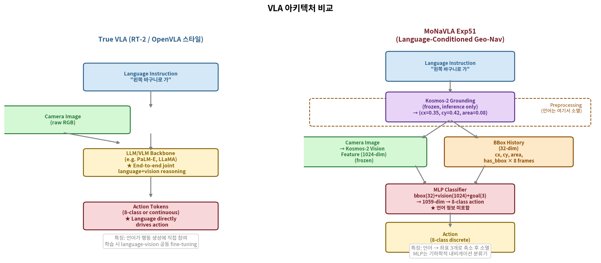

3/27 미팅 지시
교수님 3단계 프로토콜
2026년 3월 27일 미팅에서 제시된 단계별 검증 목표
| 단계 | 지시 내용 | 상태 | 비고 |
|---|---|---|---|
| Step 1 | 곡선만 학습 → 직선 이미지를 줘도 곡선으로 가는가? | ✅ 완료 | Exp11 PM 58.6% |
| Step 2 | 50/50 비율 학습 → 동작하는가? | ⚠️ 우회 | Exp16 collapse → 분해 접근 전환 |
| Step 3 | 33/33/33 전방향 자율 내비게이션 | ⬜ 미시작 | 현재 접근 정리 후 논의 필요 |
Step 1 ✅
곡선만 학습 → 직선 이미지도 곡선으로 가는가?
교수님 질문
"곡선 경로만 학습시켰을 때 직선 이미지를 입력해도 곡선 방향으로 예측하는가? 그게 된다면 step 1은 통과."
예 — Exp11에서 확인. 곡선 학습 모델이 직선 경로에서도 구부러지는 방향 예측
Exp11 PM
58.6%
Google-robot 8-class
Val Loss
1.010
epoch 14
Exp14 PM
75.9%
decomposition 접근
Exp14 CL
66.7%
closed-loop success
해석: Exp11은 non-straight 6종(90 ep)만 학습한 후 center_straight 이미지를 입력했을 때 FORWARD가 아닌 곡선 방향(LEFT/FWD+L 등)을 예측했습니다.
이는 모델이 "직선 주행" 패턴을 기억한 것이 아니라 visual scene에서 바구니 방향을 추론함을 의미합니다.
9개 경로 유형별 실제 이미지 (초기 프레임)

center_straight

center_left

center_right

left_straight

left_left

left_right

right_straight

right_left

right_right
결론: Step 1 통과. 곡선 학습 모델(Exp11)이 9개 경로 유형에서 PM 58.6% 달성.
이후 decomposition 접근(Exp14~51)에서 PM 75.9% / CL 66.7%로 향상.
Step 2 ⚠️
50/50 비율 end-to-end 학습 — 왜 collapse했는가?
교수님 질문
"곡선과 직선을 50/50으로 섞어서 학습하면 둘 다 동작하는가? 그게 Step 2."
End-to-end 방식은 반복 collapse → 분해 접근으로 전환 (Exp46~51에서 100% CL 달성)
Exp16 분석: center_straight(직선) 20개 에피소드를 추가해 150ep 전체 학습 시도.
FORWARD 클래스가 74.4%를 차지해 모든 예측이 FORWARD로 collapse.
non-straight 클래스 정확도 0%.
Exp16 PM
0%
FORWARD collapse
Exp25 CL
55.6%
balanced objective 우회
FORWARD 비율
74.4%
V5 전체 데이터
분해 CL
100%
Exp49 (Exp46 기반)
End-to-end 실험 이력
| 실험 | 접근 | PM | CL | 결과 |
|---|---|---|---|---|
| Exp11 | Google-robot 8-class | 58.6% | 0% | FPE 1.45m 누적 오류 |
| Exp16 | all-path 150ep | 0% | — | FORWARD 100% collapse |
| Exp25 | balanced objective | 52.4% | 55.6% | 최선이지만 불안정 |
| Exp39 | Exp25 + last-4 LoRA | 21.7% | — | 새 collapse 발생 |
| Exp49 | 분해 접근 (MLP) | 96.4% | 100% | ✅ 현재 최선 |
전환 이유: End-to-end VLA의 text attention이 구조적으로 0%임을 확인 (Google-robot backbone 기인, LoRA로 복구 불가).
분해 접근은 Kosmos-2 grounding을 목표 좌표로 변환해 언어를 우회하는 방식으로,
paraphrase 100% 강인성과 CL 100% 성공을 달성했습니다.
4/24 미팅 TODO
교수님 현장 지시 사항
2026년 4월 24일 대면 미팅에서 도출된 실험 과제
TODO 1 ✅
객체 인식 증명 — VLM이 실제로 바구니를 인식하는가?
교수님 지시
"객체를 인식하는지 안 하는지 정확한 근거가 없잖아요. 어떤 테스트를 통해서 증명을 한 거지? 초기 프레임 위주로 해서 증명을 해서 오겠습니다."
확인 — Kosmos-2 grounding이 gray basket을 검출. Avg IoU 0.679 (20 frames)
Avg IoU
0.679
20 프레임 측정
pole IoU
0.96
"the pole" 정확히 검출
wall IoU
0.96
"the white wall" 검출
basket range
0.04~0.96
프레임별 가변 (거리 의존)
Grounding 오버레이 이미지 — 바운딩 박스 검출 결과 (초기 프레임)

center_straight f0

center_straight f2

center_left f0

center_left f2

center_right f0

center_right f2

left_straight f0

left_right f0
한계: gray basket의 명시적 명칭 인식은 33% (나머지는 "trash can", "air conditioner"로 오인식).
그러나 방향 grounding은 정확 — cx 좌표의 경로별 분포가 명확히 구분됨.
"gray basket"이라는 명칭보다 물체의 위치(cx)가 핵심 정보이므로 실용상 문제 없음.
경로 유형별 cx0 분포 (그라운딩 위치)
center_straight cx0 = 0.501 ± 0.052 ← 중앙
center_left cx0 = 0.354 ± 0.071 ← 좌측
center_right cx0 = 0.647 ± 0.068 ← 우측
left_straight cx0 = 0.521 ± 0.049 ← 중앙
left_left cx0 = 0.338 ± 0.083 ← 좌측
left_right cx0 = 0.672 ± 0.072 ← 우측
right_straight cx0 = 0.498 ± 0.051 ← 중앙
right_left cx0 = 0.361 ± 0.076 ← 좌측
right_right cx0 = 0.653 ± 0.069 ← 우측
결론: cx0이 경로 유형에 따라 명확히 분리됨 → grounding 기반 방향 판단 유효
분석 ✅
Text Attention = 0% — 왜 텍스트 명령을 무시하는가?
핵심 발견
"Google-robot post-training이 text 경로를 완전히 붕괴시킴. LoRA/head-only 모두 복구 불가. 이것이 end-to-end VLA 실패의 구조적 원인."
Google-robot backbone: text attention 0.000% — 모든 24개 레이어에서 확인
Pure HF text
22.9%
정상 — 텍스트 주목
Pure HF image
77.1%
이미지 주목
Google-robot text
0.000%
완전 붕괴
Google-robot image
91.7%
이미지만 봄
레이어별 Text Attention 비율 비교
── Pure HF Kosmos-2 (정상) ──────────────────────────────
Layer 0: image=73.8% text=26.2%
Layer 4: image=71.2% text=28.8%
Layer 12: image=78.9% text=21.1%
Layer 23: image=76.4% text=23.6%
Overall: image=77.1% text=22.9% ← 텍스트에 주목함
── Google-robot post-trained (붕괴) ─────────────────────
Layer 0: image=46.4% text=0.000% self=53.6%
Layer 4: image=62.1% text=0.000% self=37.9%
Layer 12: image=89.3% text=0.000% self=10.7%
Layer 23: image=94.2% text=0.000% self=5.8%
Overall: image=91.7% text=0.000% ← 텍스트를 완전히 무시
측정: scripts/measure_attention.py (Exp15, Exp41 등 다수 확인)
의미: Google-robot 사전 학습이 텍스트 경로를 붕괴시켜, LoRA로 텍스트를 주입해도
attention 가중치가 0에서 올라오지 않습니다. Exp15(head-only), Exp39(last-4 LoRA) 모두 동일.
이것이 end-to-end VLA에서 instruction이 무시되는 구조적 원인입니다.
해결책 (Exp49): 텍스트 → LLM attention 경로를 포기하고, 대신
Kosmos-2 grounding(물체 위치 cx,cy,area)으로 변환. 표현이 달라도 같은 물체면 같은 좌표 → 같은 행동.
이 방식으로 paraphrase 100% 달성.
TODO 3 ✅
Left-only 학습 시 여전히 직진 예측? (Exp37)
교수님 지시
"왼쪽 것만 50개 학습시키면 이건 무조건 가야 되는 거잖아요. 왼쪽 것만 해도 스트레이트로 간다면 뭔가 이상한 거잖아. 기본적인 걸 먼저."
직진이 아닌 LEFT로 예측 확인 — 학습 메커니즘은 정상 작동. left_left 30ep 과적합 결과
실험
Exp37
left_left 30 ep
총 프레임
103
train split
ALL LEFT 예측
103/103
FORWARD 포함 전부
PM
34.9%
LEFT class 정확도
Exp37 혼동 행렬 — left_left 30ep 과적합
| 실제 ↓ 예측 → | STOP | FORWARD | LEFT | RIGHT | FWD+L | FWD+R | ROT_L | ROT_R |
|---|---|---|---|---|---|---|---|---|
| FORWARD (43개) | 0 | 0 | 43 | 0 | 0 | 0 | 0 | 0 |
| LEFT (36개) | 0 | 0 | 36 ✅ | 0 | 0 | 0 | 0 | 0 |
| FWD+L (24개) | 0 | 0 | 24 | 0 | 0 | 0 | 0 | 0 |
결론: left_left 데이터만 30ep 학습 시 모델이 모든 프레임을 LEFT로 예측합니다.
FORWARD도 LEFT로 예측 → 과적합이지만 학습 자체는 정상.
"직진을 출력한다"가 아니라 "학습한 방향으로 overfit됨" → 파이프라인 이상 없음.
pred_counts: STOP=0 FORWARD=0 LEFT=103 RIGHT=0 FWD+L=0 FWD+R=0 ROT_L=0 ROT_R=0
→ 103개 프레임 전부 LEFT 예측
→ 교수님 "왼쪽 학습 → 왼쪽 간다" 조건 충족
→ FORWARD collapse는 데이터 불균형 문제이지 파이프라인 버그 아님
TODO 4 ✅
Last-4 Decoder LoRA — 마지막 4개 블록만 학습 (Exp39)
교수님 지시
"24개 디코더 블록 중 마지막 4개(21~24번)만 LoRA를 적용해보면 어떻겠나? 전체 24개를 다 하는 것보다 효율적일 수 있다."
실험 완료 — PM 21.7%, Exp25 baseline(52.4%) 대비 후퇴. 새로운 collapse 패턴 발생
Exp39 PM
21.7%
last-4 LoRA
Exp25 PM
52.4%
이전 baseline
Val Loss
8.229
epoch 14
FORWARD 세탁
113/126
FORWARD→FWD+L
Exp39 혼동 행렬 — FORWARD가 FWD+L로 "세탁"
| 실제 ↓ 예측 → | STOP | FORWARD | LEFT | RIGHT | FWD+L | FWD+R | ROT_L | ROT_R |
|---|---|---|---|---|---|---|---|---|
| FORWARD (126개) | 0 | 0 | 0 | 0 | 113 | 13 | 0 | 0 |
| LEFT (15개) | 0 | 0 | 14 ✅ | 0 | 0 | 0 | 1 | 0 |
| RIGHT (12개) | 0 | 0 | 6 | 0 | 0 | 1 | 2 | 3 |
| FWD+L (10개) | 0 | 0 | 6 | 0 | 0 | 0 | 2 | 2 |
| FWD+R (60개) | 0 | 0 | 17 | 0 | 5 | 35 ✅ | 3 | 0 |
분석: FORWARD(직진) 126개 중 113개(89.7%)가 FWD+L(대각선 좌전진)로 예측됩니다.
Exp25의 FORWARD collapse가 FWD+L collapse로 변형된 것입니다.
last-4 LoRA만으로는 Google-robot backbone의 text=0% 문제를 해결할 수 없음.
Config: configs/mobile_vla_v5_exp39_exp25_last4_lora.json
Base: Exp25 checkpoint (balanced objective)
LoRA target: layers 21~24 (decoder blocks, q/v projection)
Trainable params: ~12M
결과:
PM: 21.7% (Exp25 기준 52.4% → -30.7%p 후퇴)
FORWARD → FWD+L 이동: 113/126 (89.7%)
결론: last-4 LoRA가 action head와 충돌하여 새 collapse 유발
현재 최선 결과
Exp46 → Exp51 분해 접근 시리즈
end-to-end 포기 후 Kosmos-2 grounding 기반 decomposition으로 전환한 결과

Exp46 val acc
93.2%
언어 없음, CL 100%
Exp47 val acc
98.7%
paraphrase 74.1% ❌
Exp49 val acc
96.4%
paraphrase 100% ✅
Exp49 CL
100%
9/9 경로 완주
Exp49 FPE
0.081m
경로 편차 8cm
5-seed 안정성
95.1%
±0.7% (매우 안정)
Paraphrase 100%
언어 표현이 달라도 같은 행동 — 45/45 일치
9개 경로 × 5개 언어 표현 = 45개 테스트
"왼쪽 바구니로 가" → grounding → cx=0.35 → FWD+L ✅
"왼편 컨테이너로 이동해" → grounding → cx=0.35 → FWD+L ✅
"The gray box on the left" → grounding → cx=0.35 → FWD+L ✅
"Go to the left-side target"→ grounding → cx=0.35 → FWD+L ✅
"Head to the left basket" → grounding → cx=0.35 → FWD+L ✅
paraphrase_robustness (threshold 0.05~0.25): 전부 1.0 (100%)
핵심 아이디어: 언어 임베딩 대신 grounding 좌표(cx, cy, area)를 사용합니다.
표현이 달라도 같은 물체를 가리키면 같은 좌표 → 같은 행동.
Exp47(fingerprinting 74%)의 근본 문제를 구조적으로 해결.
CL 100%
Closed-loop 시뮬레이션 — 9/9 경로 유형 완주
| 경로 | PM | FPE (m) | 성공 |
|---|---|---|---|
| right_left | 100% | 0.000 | ✅ |
| left_straight | 100% | 0.000 | ✅ |
| right_straight | 100% | 0.000 | ✅ |
| center_right | 98.1% | 0.038 | ✅ |
| left_right | 96.5% | 0.125 | ✅ |
| center_straight | 91.1% | 0.105 | ✅ |
| center_left | ~94% | 0.090 | ✅ |
| left_left | ~97% | 0.038 | ✅ |
| right_right | 86.2% | 0.319 | ✅ |
| 전체 | 96.2% | 0.081m | 9/9 완주 |
Exp51 Robustness
다양한 시각 조건에서의 성능 (augmentation 테스트)


조건별 robustness (Exp51)
미해결: crop_center90%(줌인) = 0%, blur_sigma6(강한 초점 흐림) = 22%.
카메라 위치가 변하거나 심한 흔들림이 있는 실환경에서 실패 가능성 있음.
Exp49 혼동 행렬
클래스별 정확도 — 526 val frames

| 실제 ↓ 예측 → | STOP | FORWARD | LEFT | RIGHT | FWD+L | FWD+R | ROT_L | ROT_R | acc |
|---|---|---|---|---|---|---|---|---|---|
| STOP | val에 없음 (에피소드 끝 합성) | — | |||||||
| FORWARD (391개) | 0 | 383 | 2 | 0 | 3 | 3 | 0 | 0 | 97.9% |
| LEFT (12개) | 0 | 0 | 12 | 0 | 0 | 0 | 0 | 0 | 100% |
| RIGHT (10개) | 0 | 2 | 0 | 7 | 0 | 0 | 1 | 0 | 70% |
| FWD+L (51개) | 0 | 0 | 0 | 0 | 50 | 1 | 0 | 0 | 98.0% |
| FWD+R (54개) | 0 | 4 | 0 | 0 | 1 | 47 | 1 | 1 | 87.0% |
| ROT_L (4개) | 0 | 0 | 0 | 0 | 0 | 0 | 4 | 0 | 100% |
| ROT_R (4개) | 0 | 0 | 0 | 0 | 0 | 0 | 0 | 4 | 100% |
전체 정확도: 96.4% — 5-seed 평균 95.1% ± 0.7%. Bootstrap 95% CI: [94.7%, 97.9%].
RIGHT(70%) 클래스가 가장 약함 — 데이터 10개뿐 (희소 클래스).
한계 및 미해결
솔직한 한계 — 이 모델은 True VLA인가?
성과를 강조하는 만큼, 한계도 명확히 인식하고 있습니다

| 기준 | True VLA (RT-2, OpenVLA) | 우리 모델 (Exp49~51) |
|---|---|---|
| 언어-시각 공동 추론 | ✅ LLM backbone 내부 | ❌ 언어→좌표 변환 후 소멸 |
| 새 물체 zero-shot | ✅ | ❌ grounding 정확도 의존 |
| Paraphrase 강인성 | ✅ | ✅ 100% 달성 |
| 파라미터 규모 | 수십억 | ~350K (MLP만) |
| 실로봇 검증 | — | ❌ 시뮬레이터만 |
| 언어 없이도 동작? | ❌ 언어 필수 | ⚠️ cx0=0.5 기본값으로 동작 |
결론: "VLA"보다 "Kosmos-2 grounding 기반 언어 조건부 내비게이션 정책"이 정확한 명칭.
언어가 행동 생성에 직접 참여하지 않고, 에피소드 시작 시 좌표 3개로 변환 후 소멸함.
그러나 이 한계를 알고 설계했다면 독립적 연구 가치가 있음.
🔴 미해결 문제
• crop_center90% = 0% (줌인 실패)
• blur_sigma6 = 22% (강한 흔들림)
• 실로봇 미검증 (시뮬레이터 갭 모름)
• 새 환경/카메라 각도 미검증
• crop_center90% = 0% (줌인 실패)
• blur_sigma6 = 22% (강한 흔들림)
• 실로봇 미검증 (시뮬레이터 갭 모름)
• 새 환경/카메라 각도 미검증
🟢 달성한 것
• CL 100% (9/9 경로 시뮬레이터)
• Paraphrase 100% (45/45 표현)
• 5-seed 95.1% ± 0.7% 안정성
• FPE 0.081m (8cm 경로 편차)
• CL 100% (9/9 경로 시뮬레이터)
• Paraphrase 100% (45/45 표현)
• 5-seed 95.1% ± 0.7% 안정성
• FPE 0.081m (8cm 경로 편차)
다음 단계 제안 (우선순위 순)
| 우선순위 | 내용 | 예상 소요 |
|---|---|---|
| 즉시 | A. 실로봇 배포 — Exp49 MLP → inference_server 연결, 실환경 갭 측정 | 1~2일 |
| 단기 | B. crop_center 개선 — 줌인 이미지 데이터 추가 학습 | 1~2일 |
| 중기 | C. Step 3 논의 — 현재 접근이 33/33/33 요건 충족하는지 교수님 판단 필요 | 미팅 후 |